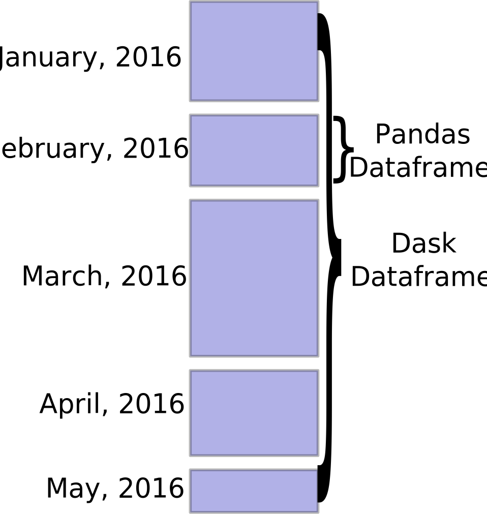

DataFrame¶
A Dask DataFrame is a large parallel DataFrame composed of many smaller Pandas DataFrames, split along the index. These Pandas DataFrames may live on disk for larger-than-memory computing on a single machine, or on many different machines in a cluster. One Dask DataFrame operation triggers many operations on the constituent Pandas DataFrames.
Examples¶
Visit https://examples.dask.org/dataframe.html to see and run examples using Dask DataFrame.
Design¶
Dask DataFrames coordinate many Pandas DataFrames/Series arranged along the index. A Dask DataFrame is partitioned row-wise, grouping rows by index value for efficiency. These Pandas objects may live on disk or on other machines.
{kind=link}
Dask DataFrame copies the Pandas API¶
Because the dask.dataframe application programming interface (API) is a
subset of the Pandas API, it should be familiar to Pandas users. There are some
slight alterations due to the parallel nature of Dask:
>>> import dask.dataframe as dd
>>> df = dd.read_csv('2014-*.csv')
>>> df.head()
x y
0 1 a
1 2 b
2 3 c
3 4 a
4 5 b
5 6 c
>>> df2 = df[df.y == 'a'].x + 1
As with all Dask collections, one triggers computation by calling the
.compute() method:
>>> df2.compute()
0 2
3 5
Name: x, dtype: int64
Common Uses and Anti-Uses¶
Dask DataFrame is used in situations where Pandas is commonly needed, usually when Pandas fails due to data size or computation speed:
Manipulating large datasets, even when those datasets don’t fit in memory
Accelerating long computations by using many cores
Distributed computing on large datasets with standard Pandas operations like groupby, join, and time series computations
Dask DataFrame may not be the best choice in the following situations:
If your dataset fits comfortably into RAM on your laptop, then you may be better off just using Pandas. There may be simpler ways to improve performance than through parallelism
If your dataset doesn’t fit neatly into the Pandas tabular model, then you might find more use in dask.bag or dask.array
If you need functions that are not implemented in Dask DataFrame, then you might want to look at dask.delayed which offers more flexibility
If you need a proper database with all that databases offer you might prefer something like Postgres
Scope¶
Dask DataFrame covers a well-used portion of the Pandas API. The following class of computations works well:
- Trivially parallelizable operations (fast):
Element-wise operations:
df.x + df.y,df * dfRow-wise selections:
df[df.x > 0]Loc:
df.loc[4.0:10.5]Common aggregations:
df.x.max(),df.max()Is in:
df[df.x.isin([1, 2, 3])]Date time/string accessors:
df.timestamp.month
- Cleverly parallelizable operations (fast):
groupby-aggregate (with common aggregations):
df.groupby(df.x).y.max(),df.groupby('x').max()groupby-apply on index:
df.groupby(['idx', 'x']).apply(myfunc), whereidxis the index level namevalue_counts:
df.x.value_counts()Drop duplicates:
df.x.drop_duplicates()Join on index:
dd.merge(df1, df2, left_index=True, right_index=True)ordd.merge(df1, df2, on=['idx', 'x'])whereidxis the index name for bothdf1anddf2Join with Pandas DataFrames:
dd.merge(df1, df2, on='id')Element-wise operations with different partitions / divisions:
df1.x + df2.yDate time resampling:
df.resample(...)Rolling averages:
df.rolling(...)Pearson’s correlation:
df[['col1', 'col2']].corr()
- Operations requiring a shuffle (slow-ish, unless on index)
Set index:
df.set_index(df.x)groupby-apply not on index (with anything):
df.groupby(df.x).apply(myfunc)Join not on the index:
dd.merge(df1, df2, on='name')
However, Dask DataFrame does not implement the entire Pandas interface. Users expecting this will be disappointed. Notably, Dask DataFrame has the following limitations:
Setting a new index from an unsorted column is expensive
Many operations like groupby-apply and join on unsorted columns require setting the index, which as mentioned above, is expensive
The Pandas API is very large. Dask DataFrame does not attempt to implement many Pandas features or any of the more exotic data structures like NDFrames
Operations that were slow on Pandas, like iterating through row-by-row, remain slow on Dask DataFrame
See DataFrame API documentation for a more extensive list.
Execution¶
By default, Dask DataFrame uses the multi-threaded scheduler. This exposes some parallelism when Pandas or the underlying NumPy operations release the global interpreter lock (GIL). Generally, Pandas is more GIL bound than NumPy, so multi-core speed-ups are not as pronounced for Dask DataFrame as they are for Dask Array. This is changing, and the Pandas development team is actively working on releasing the GIL.
When dealing with text data, you may see speedups by switching to the newer distributed scheduler either on a cluster or single machine.